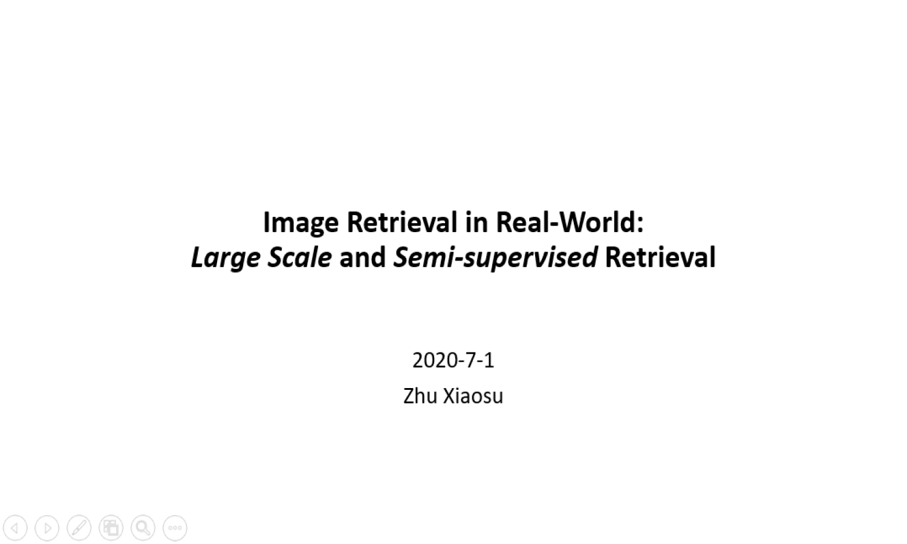

Speaker: Xiaosu Zhu [
PPT(password: cuja)
Video(password: 2942) ]
Topic:Image Retrieval in Real-World: Large Scale and Semi-supervised Retrieval
Date:July 3, 2020
Abstract:
Image retrieval techniques are progressing rapidly, while the amount of multimedia data increases exponentially. To find relevant images from a retrieval database by given query images, a bunch of fast and accurate search algorithms is proposed. Especially, Approximate Nearest Neighbor (ANN) search techniques such as hashing and quantization provide approaches to perform fast retrieval with nearly no losses on precision and recall. Recently, deep hashing/quantization frameworks show "perfect" results on well-known, fully supervised retrieval datasets. However, when images are partially unlabeled, or dataset is significantly large-scale and long-tailed, our task becomes a challenging problem. Although people make attempts on these challenges, they still remain unresolved.